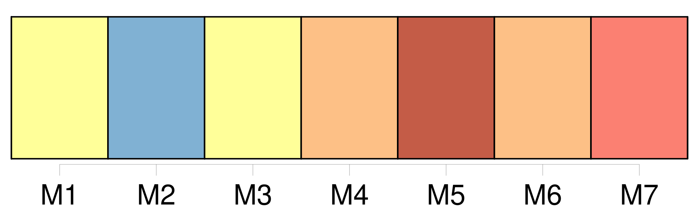

Longueur nb maillons : 12 mentions |
 |
[L'étranger] jouira en France des mêmes droits civils que ceux qui sont ou seront accordés aux Français par les traités de la nation à laquelle [cet étranger] appartiendra. [3 phrases]
[L'étranger] [qui] aura été admis par le Gouvernement à établir [son] domicile en France y jouira de tous les droits civils, tant qu' [il] continuera d'y résider. [16 phrases]
Une femme française qui épousera [un étranger] , suivra la condition de [son mari] [4 phrases]
Le Français qui, sans autorisation du Gouvernement, prendrait du service militaire chez [l'étranger] , ou s'affilierait à une corporation militaire étrangère, perdra sa qualité de français.
Il ne pourra rentrer en France qu'avec la permission du Gouvernement, et recouvrer la qualité de Français qu'en remplissant les conditions imposées à [l'étranger] pour devenir citoyen ; le tout sans préjudice des peines prononcées par la foi criminelle contre les Français qui ont porté ou porteront les armes contre leur patrie. [75 phrases]
Tout acte de l'état civil des Français et [des étrangers] , fait en pays étranger, fera foi, s'il a été rédigé dans les formes usitées dans ledit pays. [327 phrases]
Le mariage contracté en pays étranger entre Français, et entre Français et [étranger] , sera valable s'il a été célébré dans les formes usitées dans le pays, pourvu qu'il ait été précédé des publications prescrites par l'article 63, au titre des Actes de l'état civil, et que le Français n'ait point contrevenu aux dispositions contenues au chapitre précédent. |
|
Il est possible de télécharger la ressource sur la page Ortolang |
Si vous avez des questions ou vous voyez des erreurs, merci d'envoyer un mail à silvia.federzoni89@gmail.com |